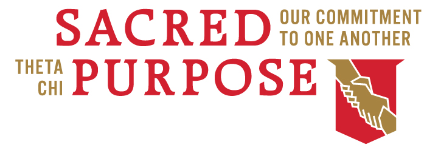
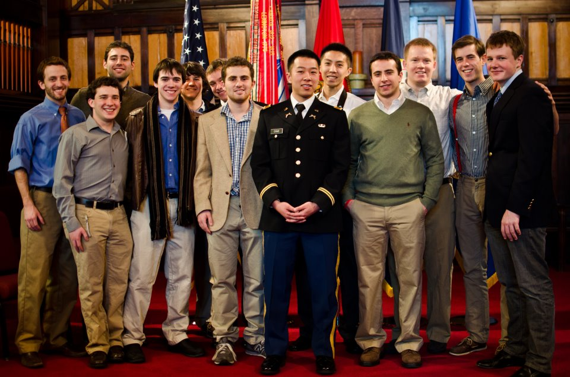

-
Health and Safety
The Vice President of Health and Safety organizes guest speakers to share their knowledge of various health and safety topics with the brotherhood, teaching us about such issues as mental health awareness, anxiety, and recognizing alcohol poisoning. Additionally, he helps to coordinate campus-wide events and campaigns that address serious health issues to help inform the entire Tufts community. He also acts as a bridge between Theta Chi and the plethora of resources that Tufts has to offer its students.
 -
Alumni Involvement
The purpose of the alumni co-chairs is to make good on the promise that Theta Chi is a lifelong brotherhood. We act as a resource for alumni to maintain their involvement and as a liaison between current and former members of the house. Our primary goals are to plan events where the alumni can interact with current house members, and create opportunities for them to give back to the house however they feel comfortable. We have some exciting things coming up this semester, with the annual Spring Fling activities, various other events, and the intended reinstatement of Beta Chi, our alumni organization, as a 501(c) organization.The current alumni co-chairs are Harrison Shapiro (2016) and Colin Burnett (2016).
-
Extracurricular Activities
The brothers of Theta Chi are involved in a host of various activities around campus. Below are a few of the organizations we belong to:
- ALAS
- ALLIES
- Boxing
- Crew Team
- Cross Country Team
- FOCUS
- JumpStart
- Kids Day
- Major: Undecided
- Pan African Alliance
- Quidditch Team
- Rugby Team
- Track and Field Team
- Tufts Admissions
- Tufts Ballroom Dance Team
- Tufts Burlesque Troupe
- Tufts Dance Collective
- Tufs Election Commission
- Tufts Fencing Team
- Tufts Hillel
- Tufts Mountain Club
- TUTV
- Squash Team
- Ultimate Frisbee Team
- Wilderness
- WMFO
- And many more!